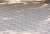

CV-OPD: Contrastive Vision On-Policy Distillation
A correct answer is not always a grounded answer.
Teach the student what visual evidence to rely on, not just what to say.
When the evidence disappears, the answer should reflect it.
Figure 101The shortcutCorrect predictions can persist without the answer-relevant pixels.
02The interventionContrast relevant and irrelevant crops under the same student prefix.
03The outcomeMore evidence-sensitive responses and higher benchmark accuracy.
01 / Motivation
Answer matching leaves
a visual shortcut open.
Vision-OPD gives a crop-conditioned teacher privileged visual evidence. Matching its output distribution does not, by itself, require the full-image student to find that evidence.
Remove the relevant evidence.
Replace the answer-related region with a black mask or Gaussian noise.
The expected answer can remain.
The model may still predict the original answer even though its visual basis is missing.
Accuracy alone cannot establish visual grounding. We also need to test whether predictions depend on the available evidence.
02 / Method
Same prefix.
Different visual evidence.
CV-OPD adds an unrelated crop-conditioned teacher. The student learns to move toward the positive teacher and away from the negative teacher, at selected token positions.
What is the color of the little girl's shirt?

R− Unrelated cropDJS(π, τ+)
Retained samples receive distillation.di,t > d̄B
d = DJS(student, positive teacher)[μ + d+ − d−]+
The student starts with the full image.
It samples its own responses. Keep a training example when at least one rollout is correct; incorrect rollouts of that retained example are still available for correction.
Controlled comparison. R− comes from the same image, matches R+ in size, and satisfies IoU(R+, R−) ≤ δ. One negative crop is shared across a sample's rollouts.
Distribution-level supervision. The words above are the paper's illustrative token outputs, not three independently generated answers. Both teacher distributions are evaluated on the student's prefix.
Original Figure 3
The training objective
Align. Select. Contrast.
JSD aligns with the positive teacher. DAG selects positions for CDL. The contrastive loss becomes zero once d− − d+ ≥ μ.
03 / Results
Better grounding.
Measurable gains.
Paper-reported evaluation on six fine-grained visual benchmarks. The comparison below uses the same Qwen3.5-4B backbone and the paper's non-thinking evaluation setting.
Average accuracy across six benchmarks
CV-OPD · Table 1Average gain over Vision-OPD
78.22 − 75.92 · Table 1Gain on ZoomBench
62.01 − 59.41 · Table 1| Method | V* | Zoom | HR 4K | HR 8K | MME EN | MME CN | Avg6 |
|---|---|---|---|---|---|---|---|
| Base model | 82.20 | 48.40 | 86.38 | 82.00 | 63.94 | 63.80 | 71.12 |
| Vision-OPD | 89.53 | 59.41 | 81.75 | 80.12 | 74.51 | 70.17 | 75.92 |
| VAD | 91.62 | 60.12 | 85.13 | 83.38 | 76.98 | 71.44 | 78.11 |
| CV-OPD Ours | 91.62 | 62.01 | 84.38 | 83.38 | 76.99 | 70.93 | 78.22 |
Avg6 is the unweighted mean. CV-OPD improves on Vision-OPD across all six benchmarks; it does not outperform every comparator on every individual benchmark. On HR-Bench 4K, the base model remains higher.
Both components contribute.
Removing either the contrastive objective or the gate reduces average accuracy.
04 / Visual evidence
Look at the object.
Respect what is missing.
Attention and response examples make the distinction concrete: identifying a lock's color is different from recognizing when the relevant pixels are unavailable.
The lock is silver.
The mailbox is red.
Vision-OPD follows the mailbox's dominant red color. CV-OPD focuses on the lock itself and identifies its metallic silver color.
The relevant object, not the surrounding color, should determine the answer.
A qualitative example of attention and response behavior, not a causal proof of grounding.
Implementation
CV-OPD
Contrastive Vision On-Policy Distillation